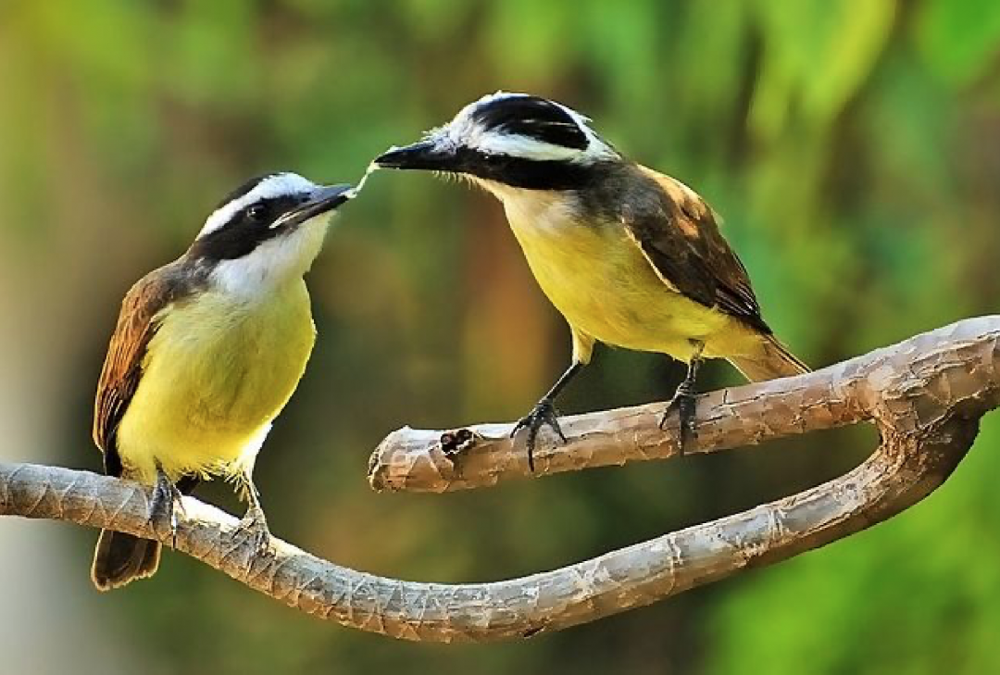

Historia do Bem-te-vi
O bem-te-vi ou grande-kiskadi é uma ave passeriforme da família dos tiranídeos de nome científico Pitangus sulphuratus. A espécie é, ainda, conhecida pelos índios como pituã, pitaguá ou puintaguá. Outras apelações existentes são triste-vida, bentevi, bem-te-vi-verdadeiro, bem-te-vi-de-coroa, tiuí, teuí, tic-tiui. A versão em português europeu da palavra se assemelha com a anglófona: great kiskadee. Na Argentina, é conhecido como bichofeo, vinteveo e benteveo; na Bolívia, como frío; e, na Guiana Francesa, como quiquivi ou qu'est-ce qu'il dit. Os únicos representantes do género Pitangus eram o bem-te-vi e a espécie Pitangus lictor,porém atualmente só uma espécie enquadra-se neste género, o próprio bem-te-vi. A espécie Pitangus lictor agora é sinonímia da atual Philohydor lictor, o bem-te-vizinho. Medindo cerca de 23,5 centímetros, caracteriza-se principalmente pela coloração amarela viva no ventre e uma listra branca no alto da cabeça, além do canto que nomeia o animal. Considerado um dos pássaros mais populares do Brasil, é um dos primeiros a vocalizarem ao amanhecer. 
Canto do bem-te-vi
O seu canto trissilábico característico enuncia as sílabas BEM-te-VI, que dão o nome à espécie. Portanto, seu nome popular possui origem onomatopeica. Seu canto pode ser também bissilábico, emitindo um BI-HÍA ou ainda monossilábico, quando escutamos um TCHÍA. Os cantos têm sonoridades diferentes consoante o local. É uma das razões de serem utilizados vários nomes comuns para esta espécie.
Subespécies
- Pitangus sulphuratus argentinus
- Pitangus sulphuratus bolivianus
- Pitangus sulphuratus caucensis
- Pitangus sulphuratus derbianus
- Pitangus sulphuratus guatimalensis
- Pitangus sulphuratus maximiliani
- Pitangus sulphuratus rufipennis
- Pitangus sulphuratus sulphuratus
- Pitangus sulphuratus texanus
- Pitangus sulphuratus trinitatis